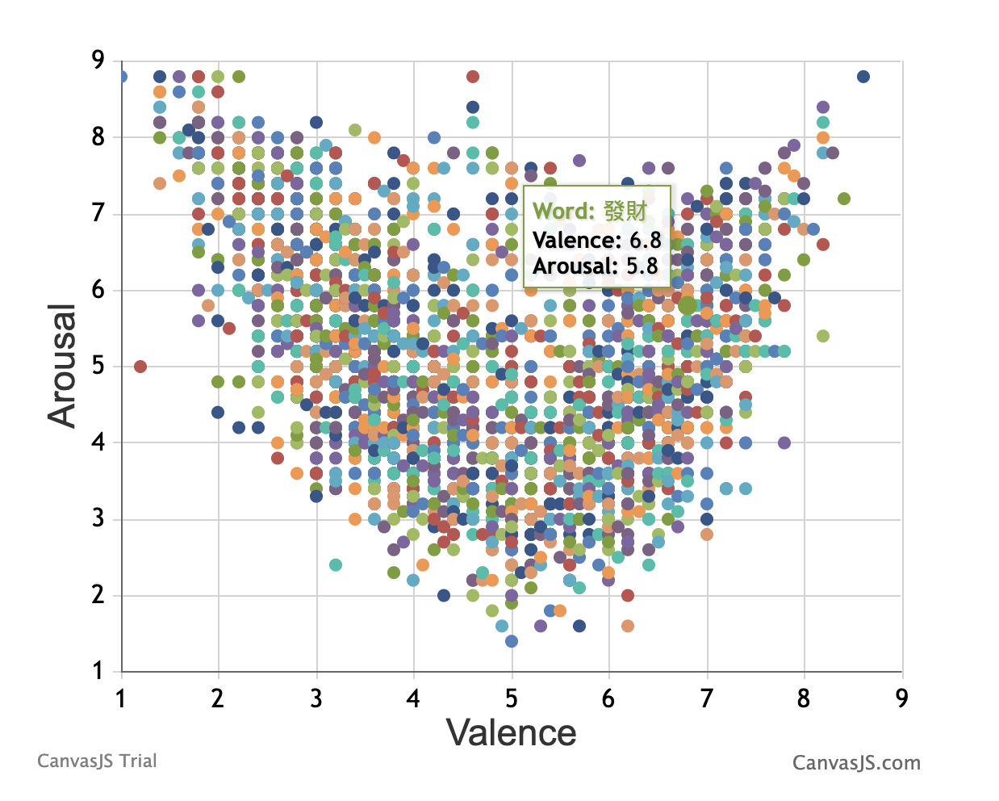
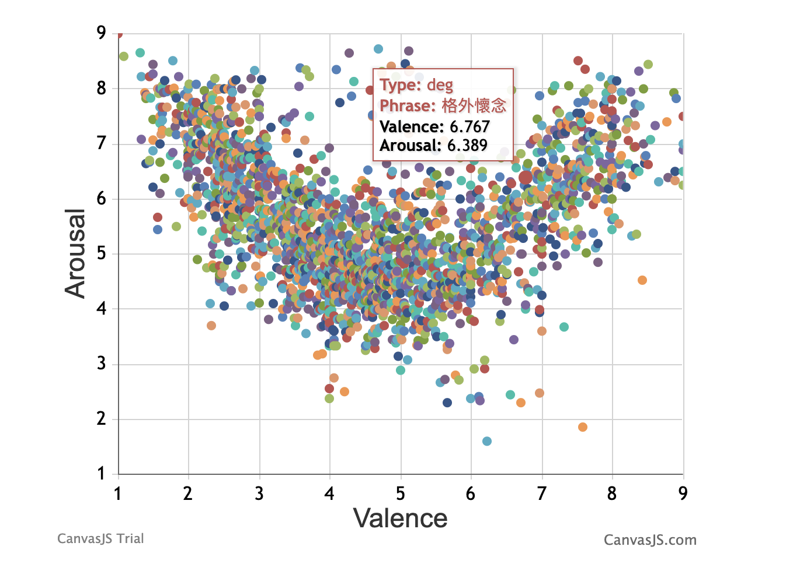
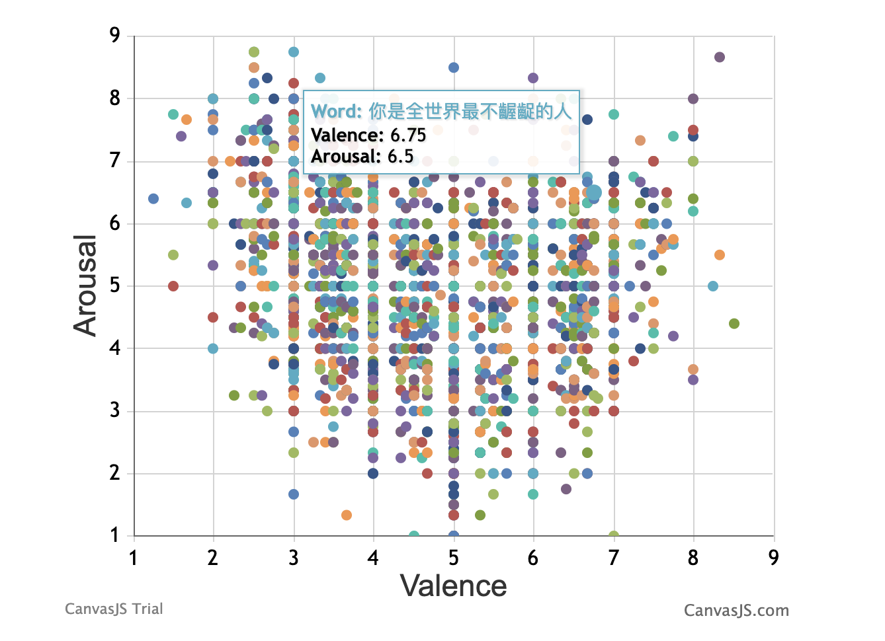
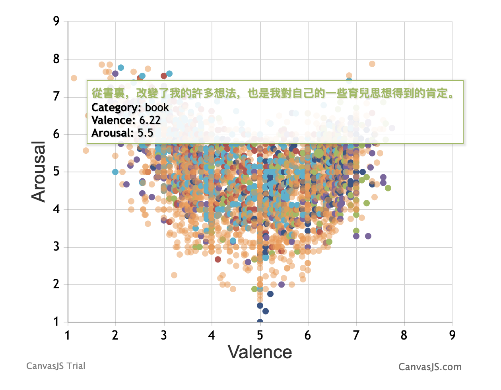
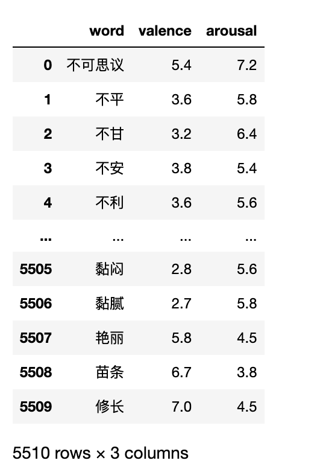

引言
『中文情绪银行』 (Chinese EmoBank)是由人工标注产生的 中文维度情感词典 ，含效价valence和唤醒度arousal两个维度。
- 效价valence，可测量出文本中的积极/消极情感程度。
- 唤醒度arousal，可测量文本中平静/兴奋状态的程度。
该词典包括
- CVAW(Chinese valence-arousal words)， 5512词
- CVAP(Chinese valence-arousal phrases)， 含2998词组
- 语料CVAS(Chinese valence-arousal sentences) 含2582个单句
- 语料CVAT(Chinese valence-arousal texts） 2969个句子
需要注意该词典是繁体中文词典，经过繁体转简体，已将CVAW嵌入到最新的cntext包。
pip3 install --upgrade cntext
本文图片来源于
CVAW(Chinese valence-arousal words)

| Word | Valence_Mean | Arousal_Mean | Valence_SD | Arousal_SD |
|---|---|---|---|---|
| 乏味 | 3.4 | 3.0 | 0.800 | 1.414 |
| 放鬆 | 6.2 | 2.0 | 0.748 | 0.894 |
| 勝利 | 7.8 | 7.2 | 0.748 | 1.166 |
| 痛苦 | 2.4 | 6.8 | 0.490 | 0.748 |
CVAP(Chinese valence-arousal phrases )

| Modifier Type | Phrase | Valence_Mean | Arousal_Mean | Valence_SD | Arousal_SD |
|---|---|---|---|---|---|
| deg | 十分有趣 | 8.222 | 7.063 | 0.533 | 0.390 |
| mod | 應該開心 | 5.986 | 5.350 | 0.242 | 0.456 |
| neg | 不喜歡 | 3.033 | 5.788 | 0.481 | 0.605 |
| neg_deg | 沒有太難過 | 4.478 | 4.675 | 0.413 | 0.538 |
CVAS(Chinese valence-arousal sentences)

| Text | Valence_Mean | Arousal_Mean | Valence_SD | Arousal_SD |
|---|---|---|---|---|
| 這是我觀賞過的最令人驚歎的演出。 | 7.000 | 7.750 | 0.000 | 0.433 |
| 簡直是人生惡夢的開端。 | 2.600 | 6.750 | 0.490 | 0.829 |
| 從小我經常覺得現實很無聊。 | 3.667 | 4.333 | 0.471 | 0.471 |
| 過去他們很輕鬆地賺錢。 | 5.667 | 4.000 | 1.247 | 0.816 |
CVAT(Chinese valence-arousal texts)

| Text | Valence_Mean | Arousal_Mean | Valence_SD | Arousal_SD | Category |
|---|---|---|---|---|---|
| 很多車主抱怨新車怠速抖動嚴重—-冷車時更嚴重。 | 3.250 | 5.667 | 1.090 | 1.054 | Car |
| 房間裏黴味，煙味撲鼻，沒有窗戶通風，骯髒的地毯上的斑斑點點的污蹟，令人觸目驚心。 | 1.889 | 6.875 | 0.737 | 0.927 | Hotel |
| CPU顯卡也完全夠用，接口也非常齊全，總體來說很滿意！ | 7.143 | 5.000 | 0.350 | 0.816 | Laptop |
| 飛安帶來更多保障，也提供旅客更安心的服務品質。 | 7.000 | 4.222 | 0.535 | 1.133 | News |
文献
如果用到Chinese EmoBank词典，请注明出处。
Lung-Hao Lee, Jian-Hong Li and Liang-Chih Yu, “Chinese EmoBank: Building Valence-Arousal Resources for Dimensional Sentiment Analysis,” ACM Trans. Asian and Low-Resource Language Information Processing, vol. 21, no. 4, article 65, 2022.
Liang-Chih Yu, Lung-Hao Lee, Shuai Hao, Jin Wang, Yunchao He, Jun Hu, K. Robert Lai, and Xuejie Zhang. 2016. “Building Chinese affective resources in valence-arousal dimensions. In Proceedings of NAACL/HLT-16, pages 540-545.
代码
import cntext as ct
ct.load_pkl_dict('ChineseEmoBank.pkl')
Run
{'Referer-1': 'Lee, Lung-Hao, Jian-Hong Li, and Liang-Chih Yu. "Chinese EmoBank: Building Valence-Arousal Resources for Dimensional Sentiment Analysis." Transactions on Asian and Low-Resource Language Information Processing 21, no. 4 (2022): 1-18.',
'Referer-2': 'Liang-Chih Yu, Lung-Hao Lee, Shuai Hao, Jin Wang, Yunchao He, Jun Hu, K. Robert Lai, and Xuejie Zhang. 2016. "Building Chinese affective resources in valence-arousal dimensions. In Proceedings of NAACL/HLT-16, pages 540-545.',
'Desc': 'Chinese Sentiment Dictionary, includes 「valence」「arousal」. In cntext, we only take single word into account, ignore phrase.',
'ChineseEmoBank': word valence arousal
0 不可思议 5.4 7.2
1 不平 3.6 5.8
2 不甘 3.2 6.4
3 不安 3.8 5.4
4 不利 3.6 5.6
... ... ... ...
5505 黏闷 2.8 5.6
5506 黏腻 2.7 5.8
5507 艳丽 5.8 4.5
5508 苗条 6.7 3.8
5509 修长 7.0 4.5
ChineseEmoBank的CVAW词典(Chinese valence-arousal words)原有 5512词，经过繁体转简体处理，得到5510个词。
diction_df = ct.load_pkl_dict('ChineseEmoBank.pkl')['ChineseEmoBank']
diction_df
Run

测量一段文本的valence和arousal，
text = '很多车主抱怨新车怠速抖动严重---冷车时更严重。'
help(ct.sentiment_by_weight)
Run
Help on function sentiment_by_weight in module cntext.stats:
sentiment_by_weight(text, diction, params, lang='english')
calculate the occurrences of each sentiment category words in text;
the complex influence of intensity adverbs and negative words on emotion is not considered.
:param text: text sring
:param diction: sentiment dictionary dataframe with weight.；
:param params: set sentiment category weight, such as params=['valence', 'arousal']
:param lang: "chinese" or "english"; default lang="english"
:return:
计算文本text中chinese_emobank词两维度的汇总得分，得到valence、arousal、word_num
text = '很多车主抱怨新车怠速抖动严重---冷车时更严重。'
ct.sentiment_by_weight(text = text,
diction = diction_df,
params = ['valence', 'arousal'],
lang = 'chinese')
Run
{'valence': 14.8,
'arousal': 24.8,
'word_num': 13}
- valence是句子中各个chinese_emobank词valence得分的加总。
- arousal是句子中各个chinese_emobank词arousal得分的加总。
- word_num是句子中的词语数(含标点符号)，短文本的情况下，word_num会不太准确，长文本情况下无限接近真实词语数。
需要注意，文本越长，valence和arousal指标应该会越大。使用这两个指标时，需要结合word_num进行均值处理，即
Valence = valence/word_num
Arousal = arousal/word_num
这里未做均值处理，尽量保留文本的原始信息。